高清图库Gallery · Click to Enlarge
洞厅的尺度、石笋的轮廓、石幔的褶皱与卷曲石的偏转。十八幅影像，按类型归档。点击任意图片，可进入全屏预览。
03 / 04
点击图片可放大预览 · 支持键盘 ← → 切换 · Esc 关闭
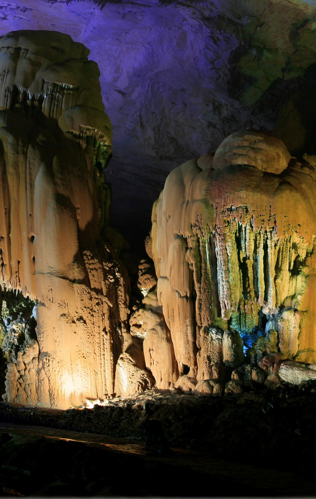
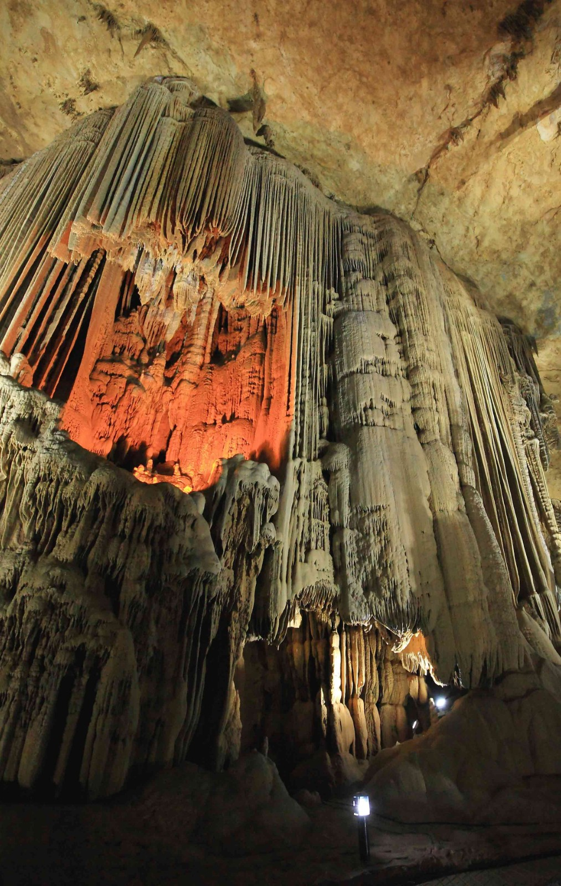
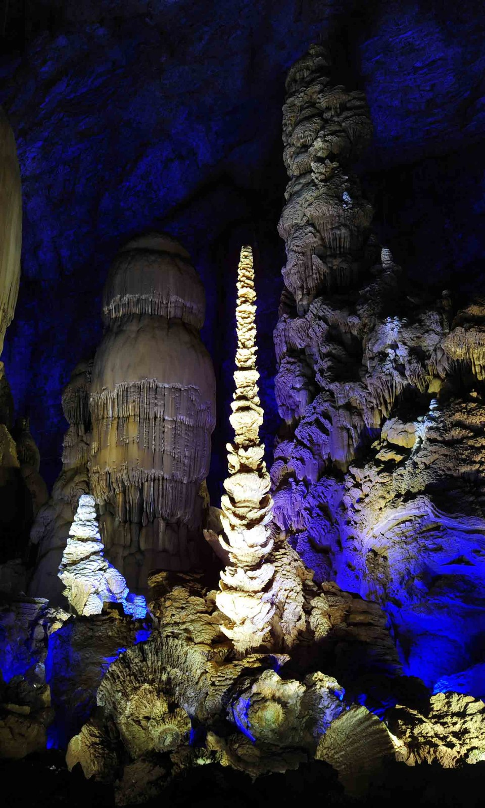
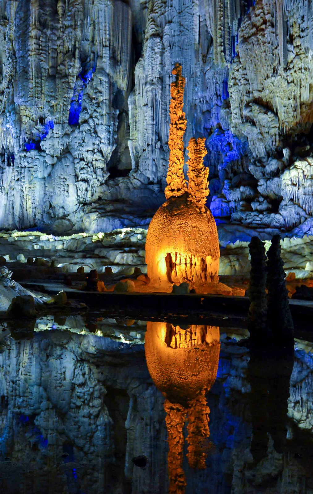
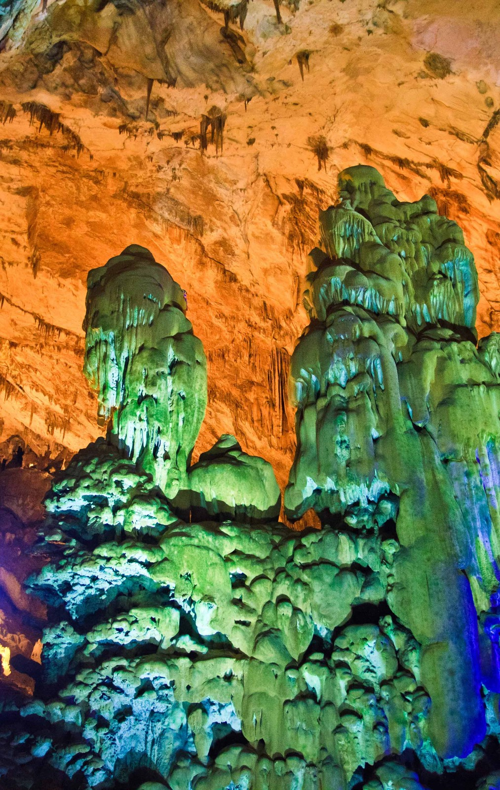
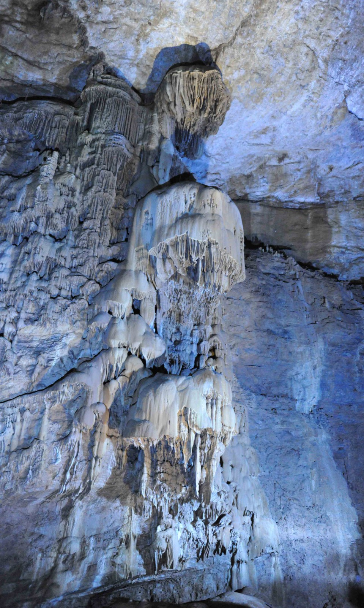
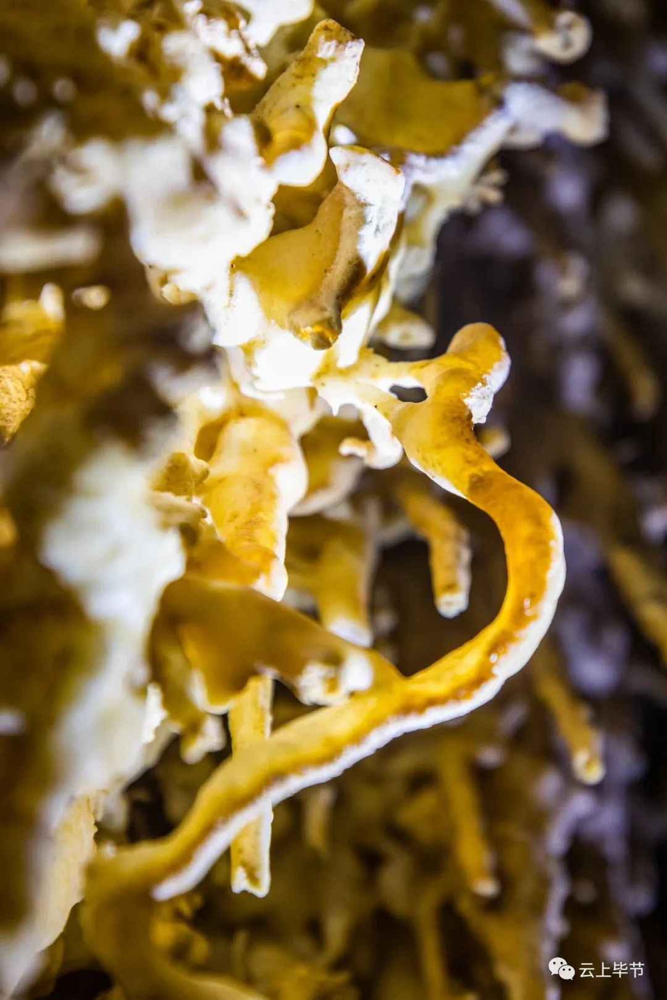
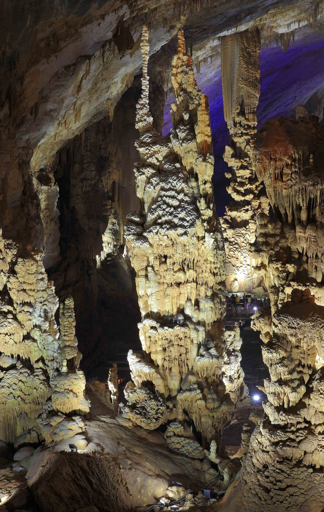
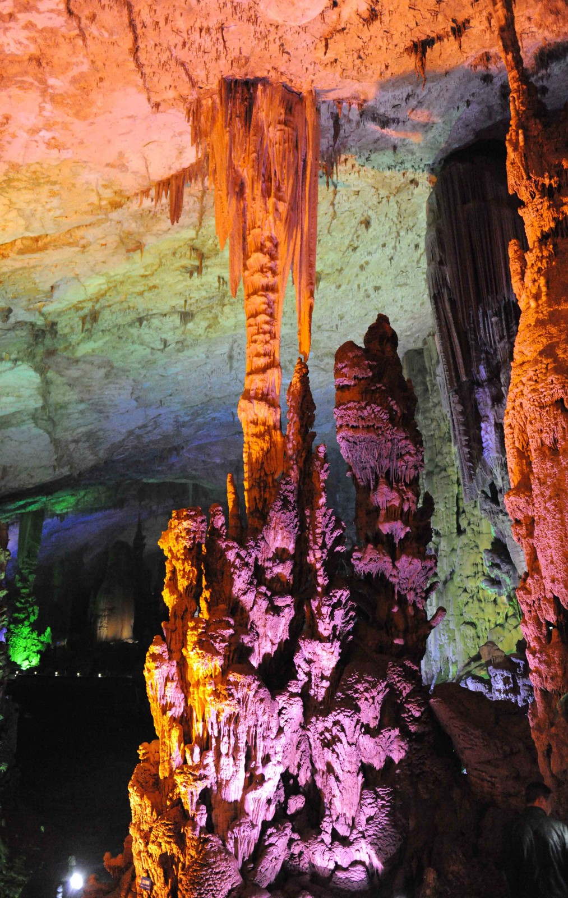
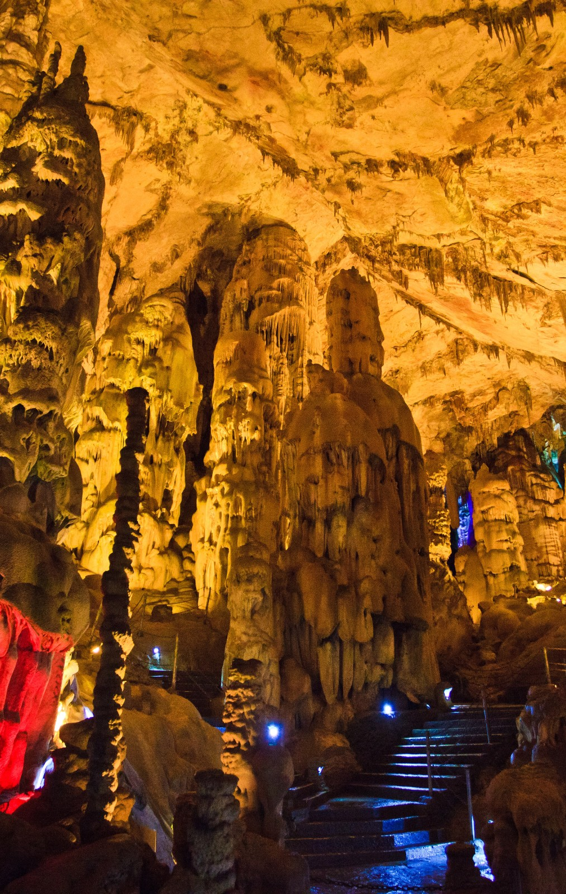
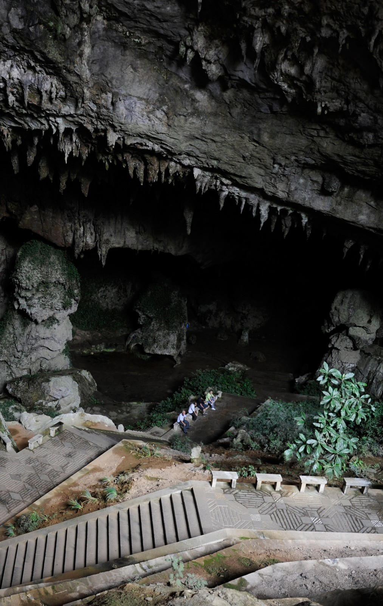
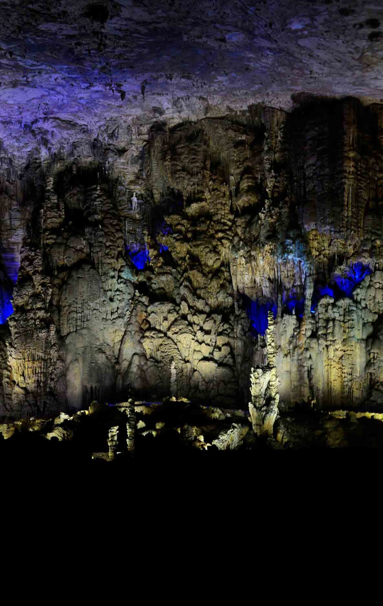
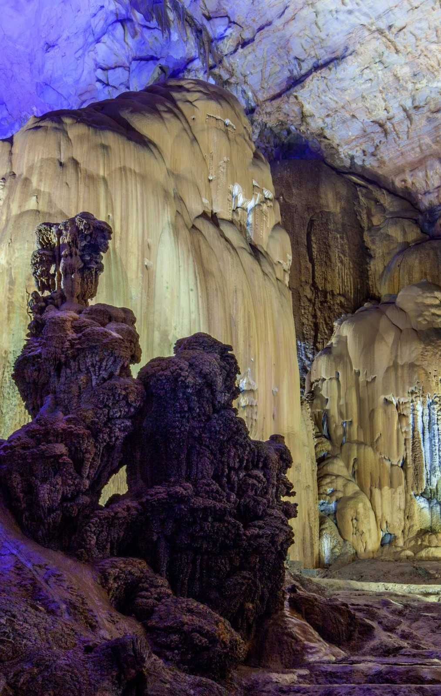
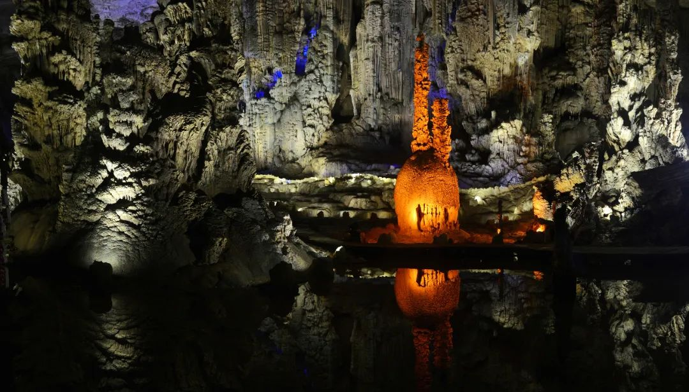
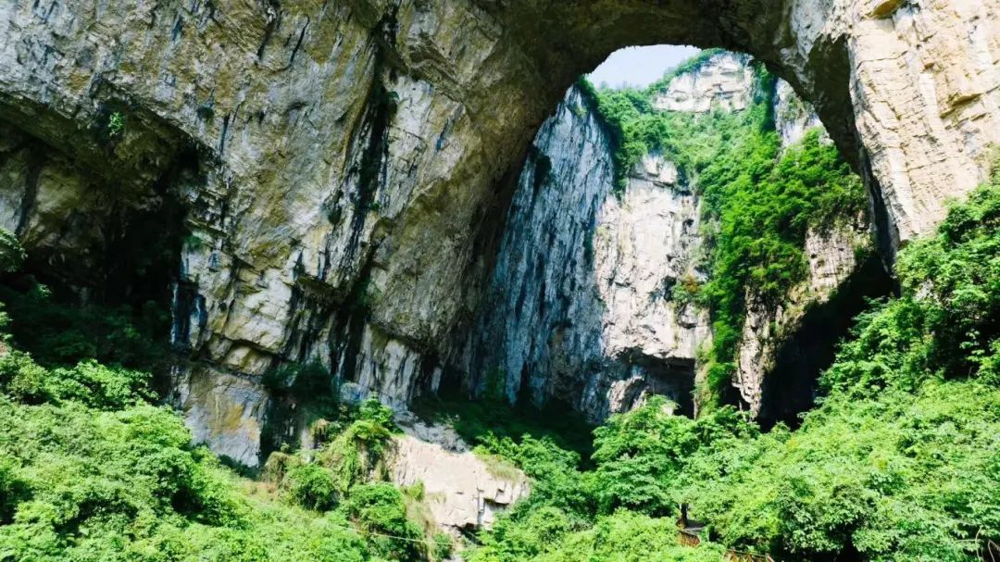


拍摄提示
在暗处，怎么拍得更好
洞内光线复杂，保护景观永远优先于照片效果。
01
关闭闪光灯
闪光会惊扰洞穴生物，也会加速部分藻类生长。请使用现场灯光或提高相机感光度。
02
稳住相机
弱光环境容易糊片。可倚靠栏杆保持稳定，或使用小尺寸三脚架，但不要阻塞游线。
03
留出尺度
在画面边缘带入栏杆、人物或步道，能更直观地表现洞厅与石柱的真实体量。
看完图片，
该安排一次真正的进入了。
开放时间、交通与三条推荐路线，一次讲清楚。